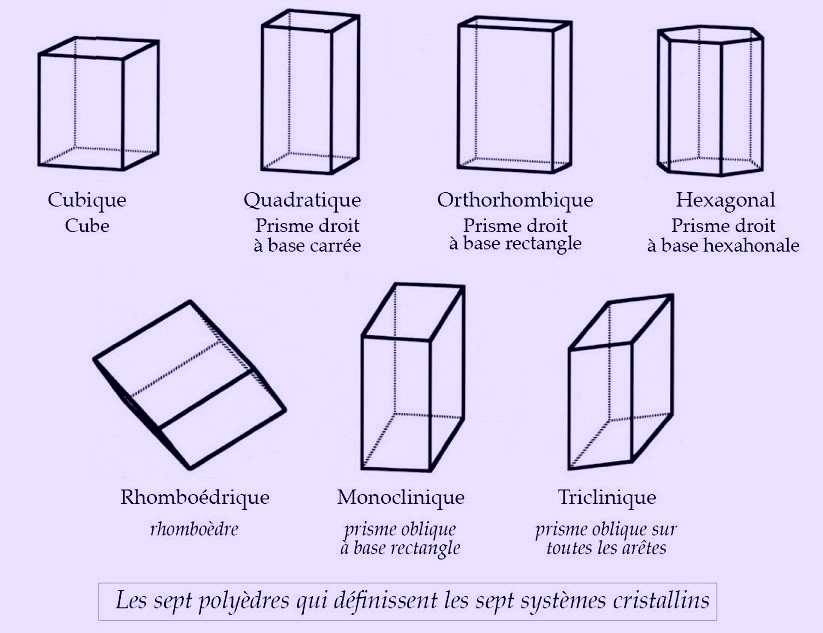

Par cristal on entend tout solide dont la structure interne est ordonnée et se répète, peu importe l'échelle à laquelle on l'observe : si un cristal de plusieurs mètres a une forme cubique, il en sera de même pour un autre cristal de la même espèce de l'ordre du micromètre. Que ce soit dans l’Antiquité ou bien aujourd’hui, les cristaux ont toujours été présents sous différentes formes, que ce soit dans les roches, les liquides ou bien à l’intérieur même de notre corps. Nous pouvons alors nous demander comment leurs utilisations ont évolué au cours les siècles et quelles sont les découvertes qui leur sont associées.
Que ce soit en Egypte Antique ou en Mésopotamie, les pierres précieuses telles que l’émeraude ou le saphir étaient prisées des souverains pour orner leurs cous ou leurs mains.
Nicolas Sténon remarque que les faces des cristaux forment toujours le même angle entre elles, peu importe la taille du cristal.
En faisant tomber un cristal de calcite, l'abbé René-Just Haüy remarque que les fragments produits ont conservé la même forme géométrique que le cristal de départ, il conjecture alors le caractère ordonné de la structure des cristaux.
Jean Baptiste Romé de l'Isle, dans "Cristallograhie" confirme l'observation de Sténon et édicte la loi de constance des angles pour tout cristal.
Le géologue Dolomieu établit le principe de maille élémentaire ; lorsqu'il casse un cristal, des fragments de même formes que l'original sont créés, et ainsi de suite. Il suppose alors que cette opération se répète à l'infini jusqu'à atteindre une entité irréductible. Il nomme alors cette entité maille et en distingue 7 formes ; cubique, quadratique, orthorhombique, monoclinique, triclinique, hexagonale et rhomboédrique.
Les cristaux sont de plus en plus prisés pour leur beauté et se diversifient sans cesse. De plus, ils commencent également à être employés dans l'industrie.
Mise en évidence par Max von Laue que les rayons X sont diffractés par des cristaux. Cela permet de notamment de prouver les théories de Dolomieu, ainsi, la cristallographie moderne apparaît et Laue reçoit Prix Nobel de Physique en 14.
William Henry Bragg démontre l'hypothèse d'Haüy à l'aide des rayons X.
Les cristaux sont présents dans tous les aspects de notre vie. Ils sont utilisés dans l'industrie de pointe, dans le domaine médical ou encore dans le nettoyage ; en effet, les produits d'entretien sont en partie composés de cristaux ! Evidemment, ils sont aussi prisés pour leur beauté et leur rareté sous la forme de bijoux. De plus, certaines croyances se sont développées autour d'eux ; on leur attribuerait des bénéfices sur la santé et le moral.
En résumé, les cristaux, qui auparavant étaient réservés à une élite, se sont petit à petit démocratisés à l'aide de nombreuses découvertes qui leur étaient associées jusqu'à devenir une partie intégrante de notre quotidien.